Laptop Ceiling Suspension
I quite like being able to place my laptop screen where I want it in space. In my "Supine Computing" post, zip ties are used to attach a laptop to a strap above a regular hammock, and to the support straps of a circular hammock. This post goes into a related idea, an easy and convenient way to suspend laptops indoors.
Sitting with suspended laptop
If I'm feeling like using my computer on my futon, I just clip it to some adjustable tie-downs$ hanging from the ceiling:
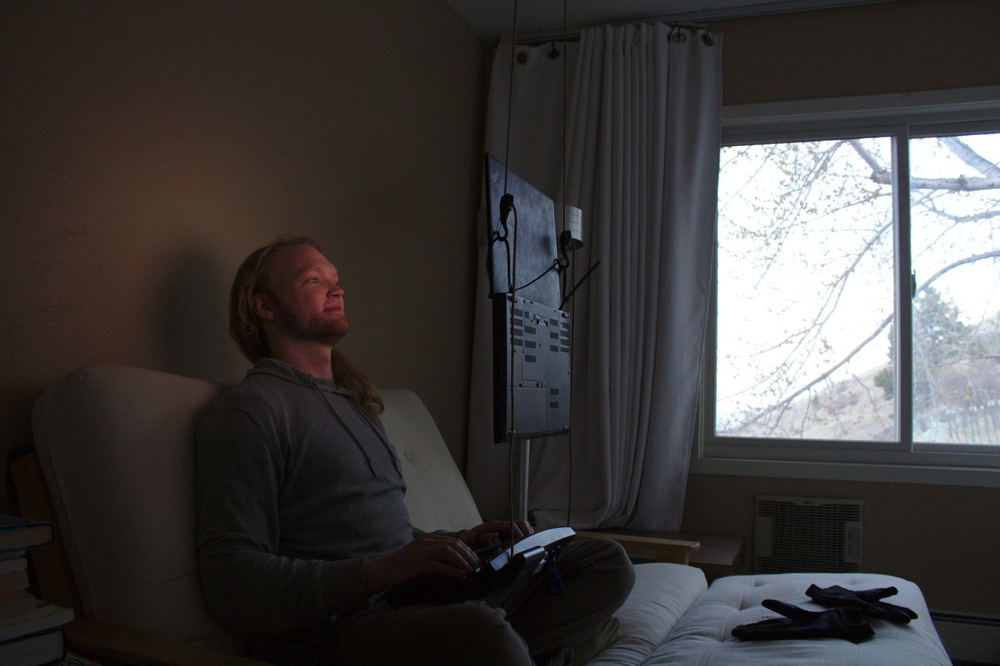
Another approach is to use a laptop stand, such as the Magichold stand$ shown in the Deck Desk post. While this stand is fairly portable, I prefer to leave it setup with my recliner.
Supine with suspended laptop
If I feel like shifting to a supine posture, I can just move one of the tie-downs to another hanger, which rotates things 90 degrees:
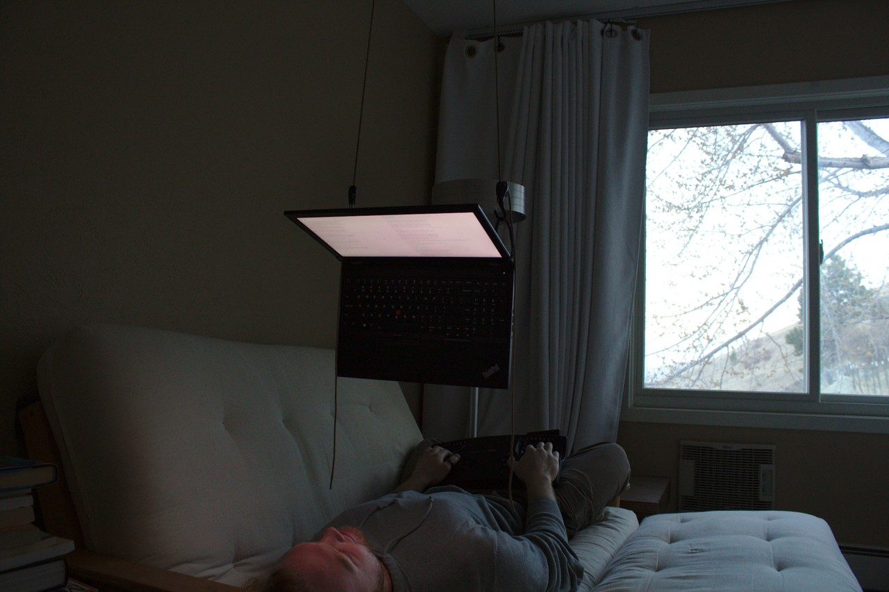
To allow a quick transition between these two postures, the adhesive hangers on the ceiling are in this configuration:
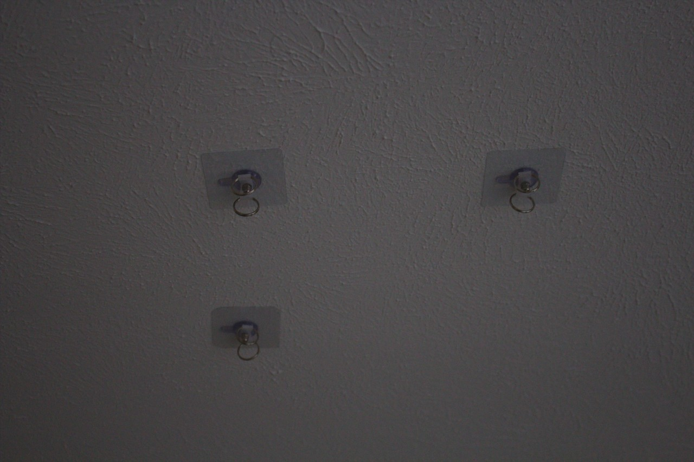
One thing to note is that the spacing here is narrower than ideal. I later realized that spacing wider than the width of the laptop leads to more rotational stabilization.
Materials: adhesive hangers + adjustable paracord
I'm currently renting, and would prefer to avoid maintenance on move out, so I began looking for suspension approaches which avoid putting holes in the ceiling. The ceiling is textured, so suction cups wouldn't work. So, I began looking for adhesive hangers available online, but most seemed to be intended for the wall, and had relatively low weight ratings. This makes sense, as adhesives typically have higher shear strength.
After comparing options for a while I ordered "Multi Purpose No Drilling Required Ceiling Hooks Suspension and Wall Hooks Hangers"$ from the cryptic brand "CRH600" – 12 adhesive hangers for $15. They're intended for the ceiling, and the comments indicate a max load of around 6 or 7 pounds. Perfect! Even my heaviest laptop, a P51 ThinkPad workstation, weighs less than the limit, 5.8 pounds.
I also wanted to be able to easily configure the height of my laptop, and so looked around at various adjustable ropes and cords1. I eventually ordered a couple packs of Progrip "Better Than Bungee" paracord tie-downs$. These tie-downs are awesome, I've since ordered more packs since I keep finding more uses for them. Both ends have carabiner-like hooks, and one end adjusts position on the cord by holding down a lever. They are also strong – I've used a single one of these to suspend around 30lbs, and it handled it just fine for days on end (not from adhesive hangers).
Here's what the adhesive hangers$ and tie-downs$ look like:
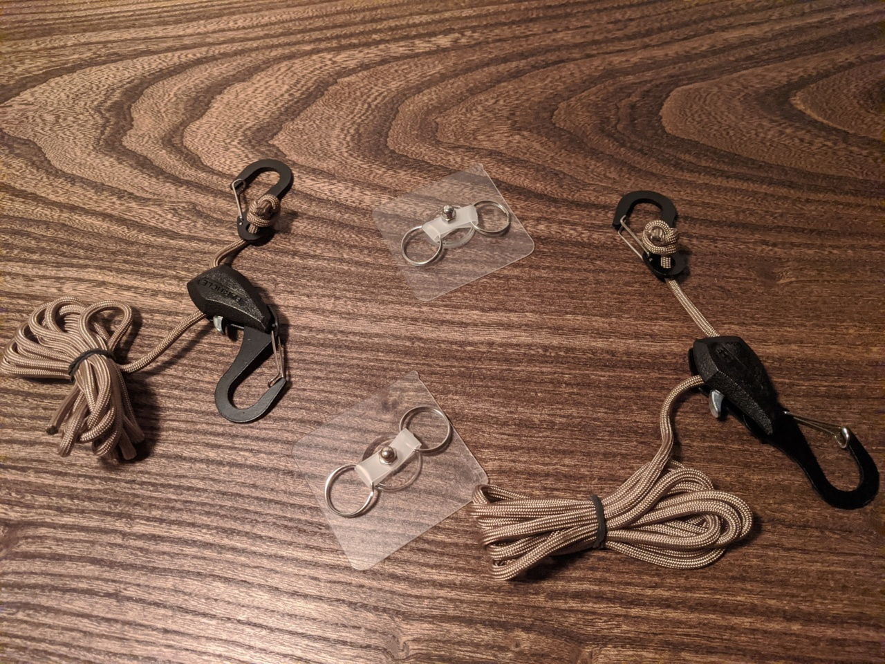
Zip ties around hinges
A rather nice way to add attachment loops to a laptop is to thread releasable zip ties$ between the screen and body, around the hinges, like this:
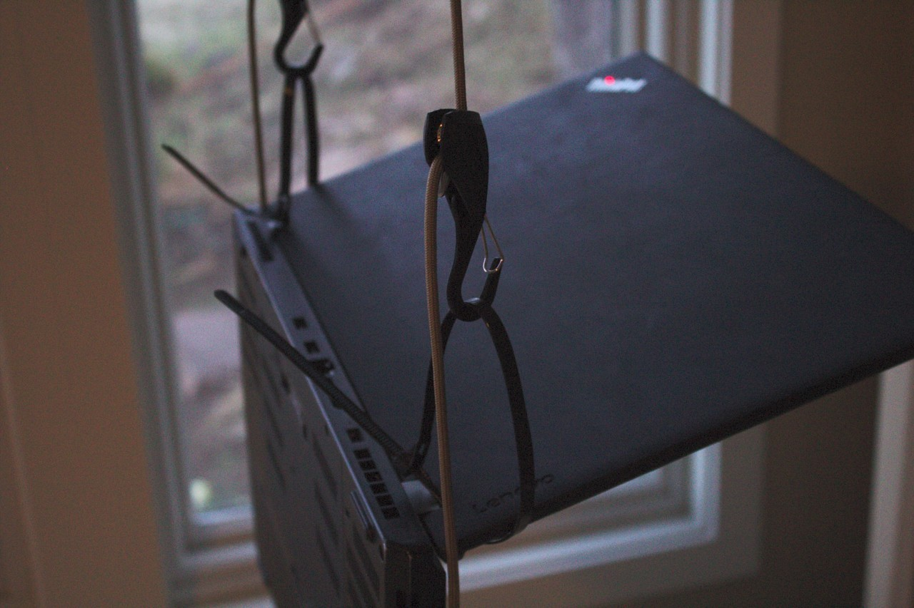
2021-07-08 update: These days I prefer Mille-Ties$ for this purpose instead of releasable zip ties. Though, I think the wire solution below is better / more aesthetic, it's fiddly to get it right. See my my recent ergo update for more details.
Alternative to zip ties: wire around hinges
I have also had success with wire around my laptop hinges. The benefit of this is that they don't need to be taken on and off the way releasable zip ties$ tend to. This idea is still being refined, but here are a few images that should give some idea of what I'm talking about:
In the photo below, wire is placed sloppily around the hinge. I used this for about a month – it worked great.
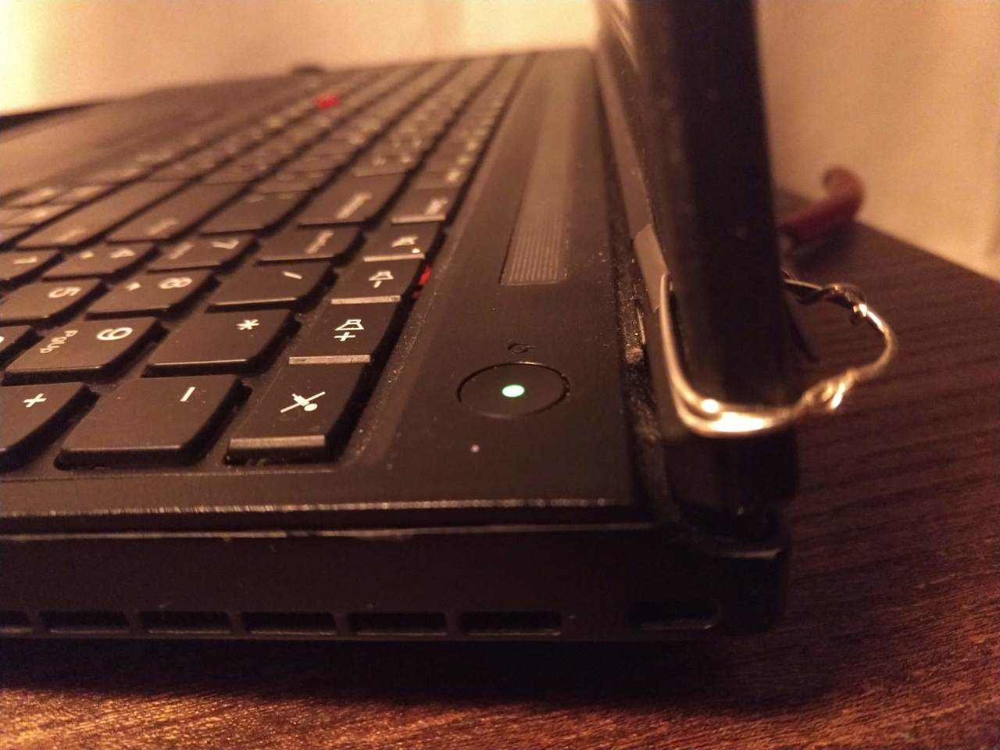
In the photo below, wire is neatly placed around the axle of the hinge. I'm waiting for a soldering iron to arrive in the mail to finish it. I sold my old soldering iron when I last pared down my possessions, foolishly thinking I could always use a makerspace.
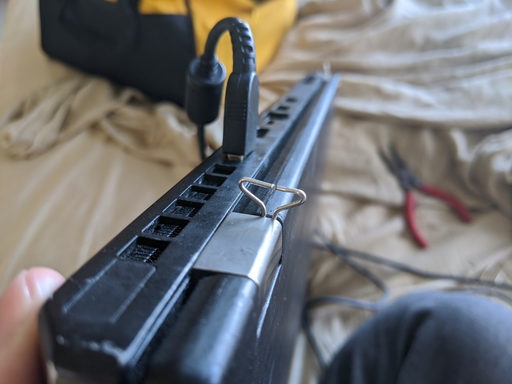
Pictured below is the wire and tools I'm using to bend it. I have no idea what I'm doing – there's a whole art of wire bending – and I'm just winging it. For fun I did get some premium wire, though, 18 gauge half hard sterling silver$. I figured since I need so little wire, may as well get pretty and sturdy stuff.
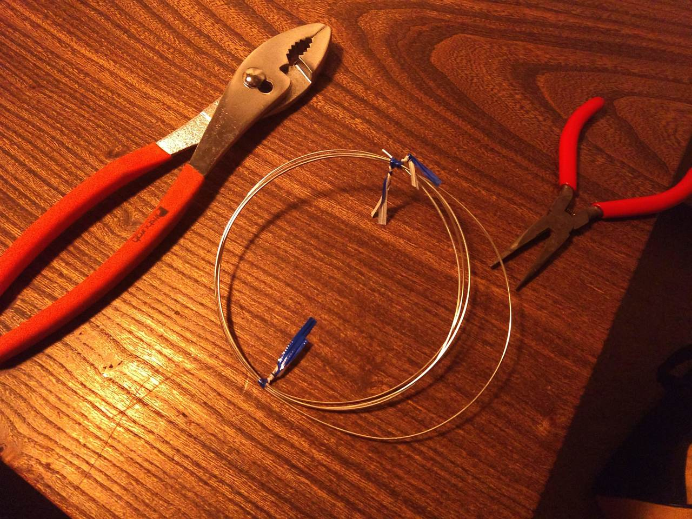
Other suspension points: window blinds / curtain track
Laptops can also be suspended in front of a window for indoor standing setups. Along with providing views, windows also often have blinds or curtains which can be conveniently reused for the suspension.
Below, adjustable tie-downs$ are wrapped directly around blinds, and hooked to themselves:
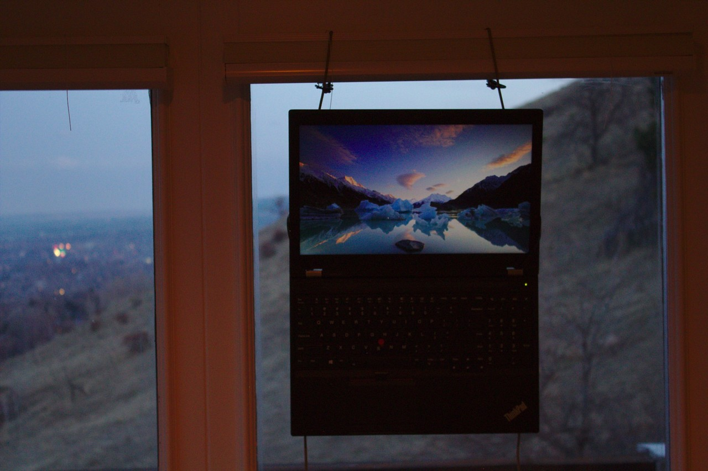
Below, two reusable "Mille-Ties"$ are threaded between a curtain track and the ceiling, around the plate attaching it to the ceiling. This allows the curtain to close without removing the ties!
These ties are pretty cool, they are a bit stretchier than releasable zip ties, but these are thinner and more bendable, so they have their uses.
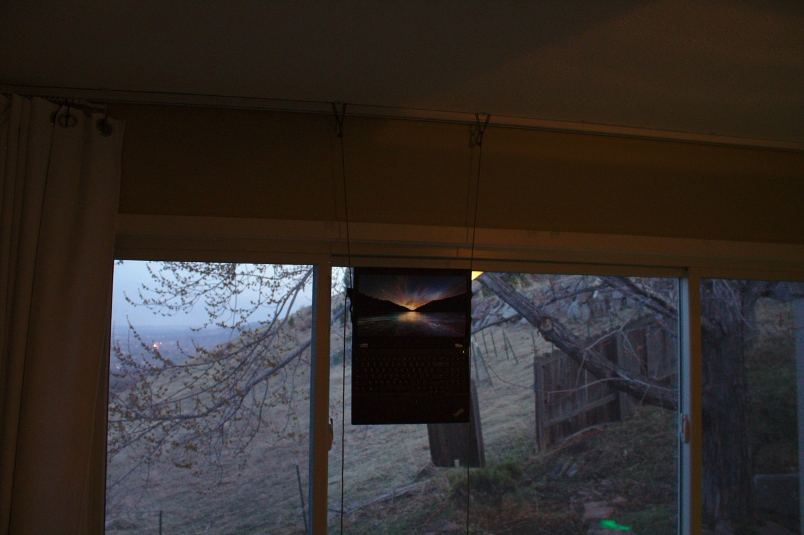
You might wonder how I'm typing when standing at a window. For these setups, I typically have my keyboard suspended from my pants, like in the "Deskless Ergonomic Work-From-Home Setups" post.
Other use: rowing machine entertainment
This is also a nice way to put a screen at head height while using a rowing machine:
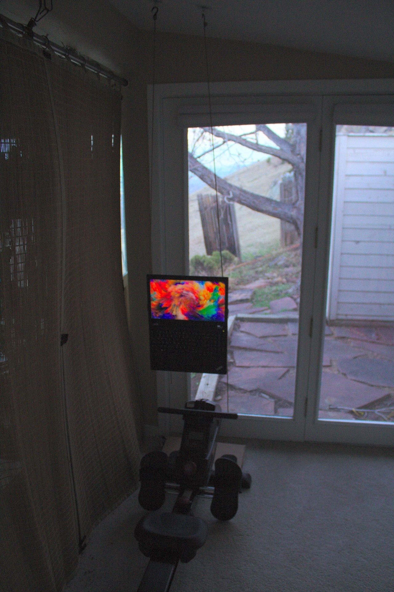
Footnotes
I also tried Nite Ize's "Rope Tightener with Rope, 1-3/4in."$, which uses a "CamJam" to secure the paracord. I found that these were more awkward to adjust than Progrip's "Better Than Bungee" tie-downs.↩︎
Some links are amazon affiliate links, which sometimes send me a bit of money when you make purchases after clicking them. The purpose of this blog is sharing information and ideas, not making money. But I figure I may as well add them, and I appreciate usage of them! If you do feel inclined to show your appreciation for these posts directly in monetary form, feel free to buy me a coffee.